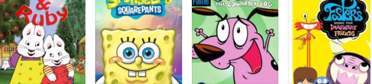
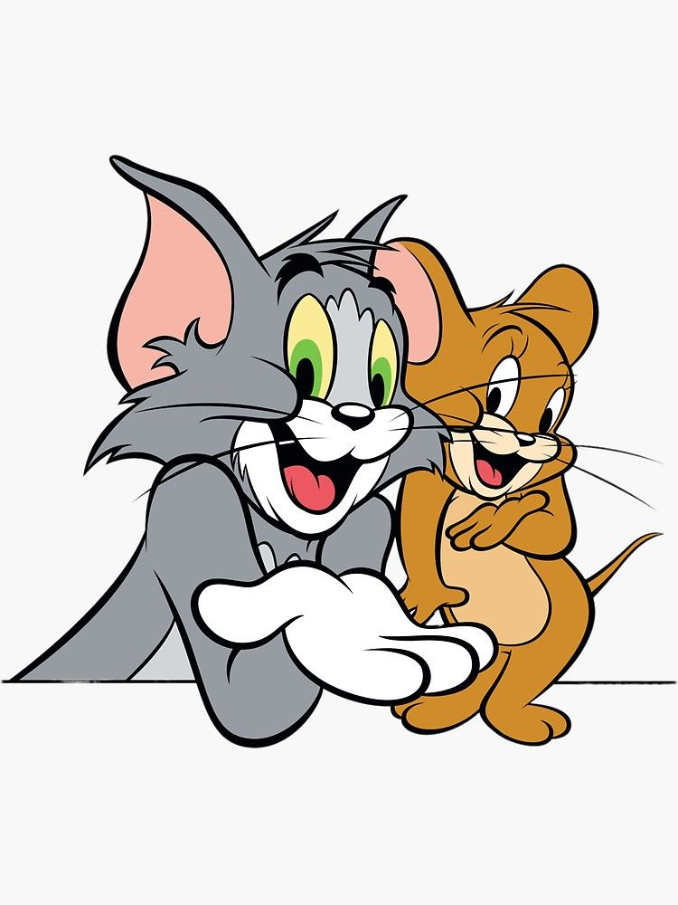
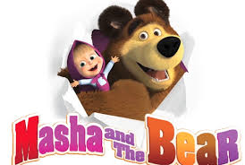
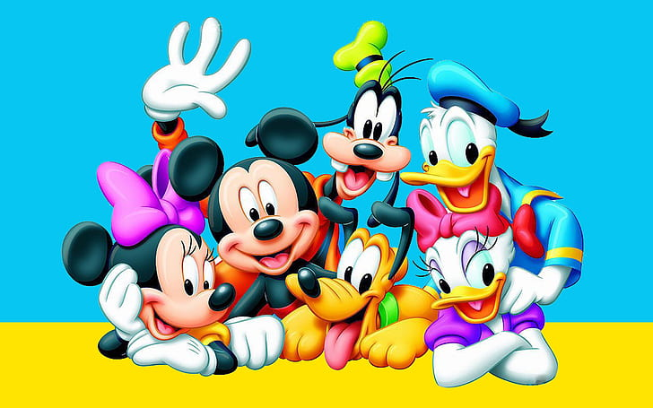
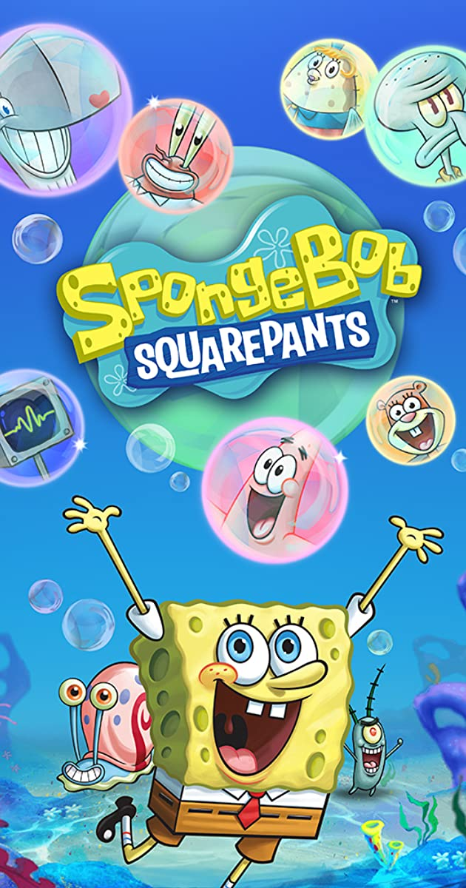
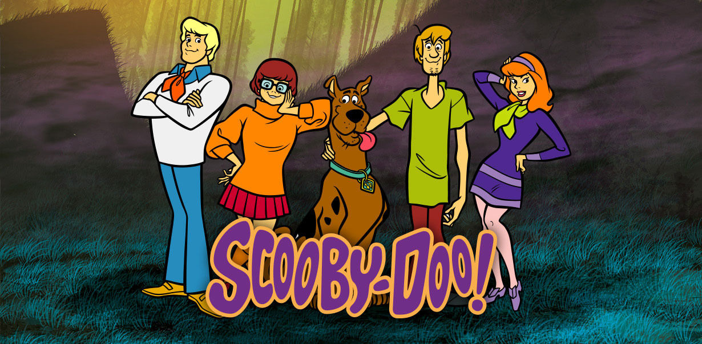
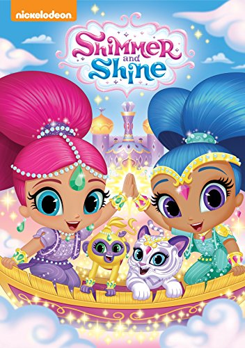
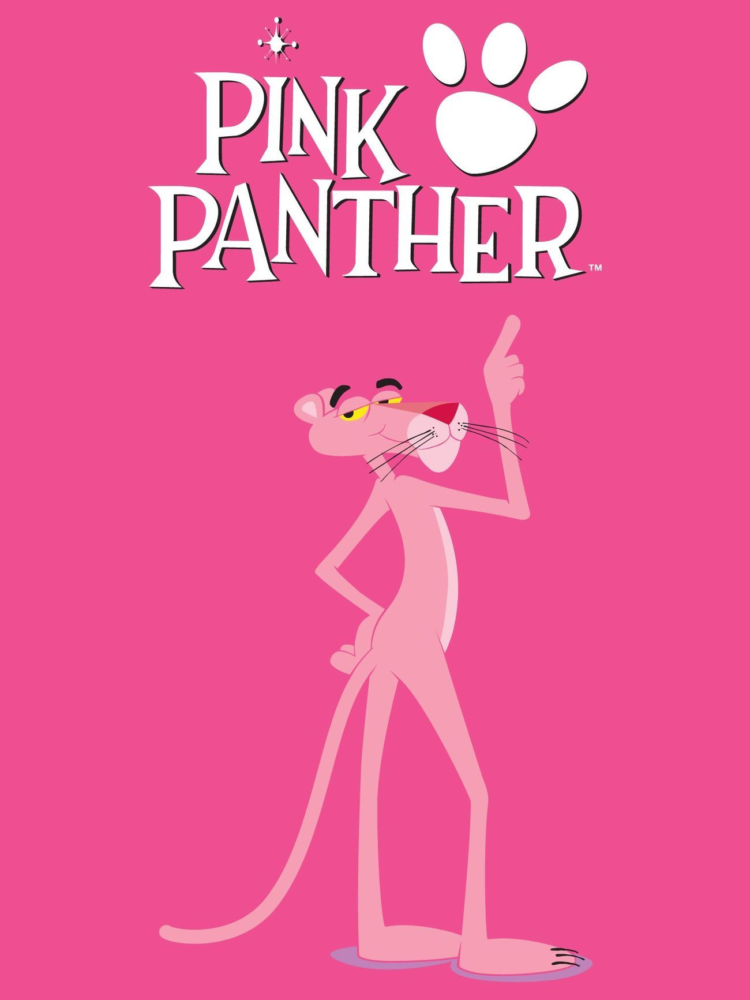
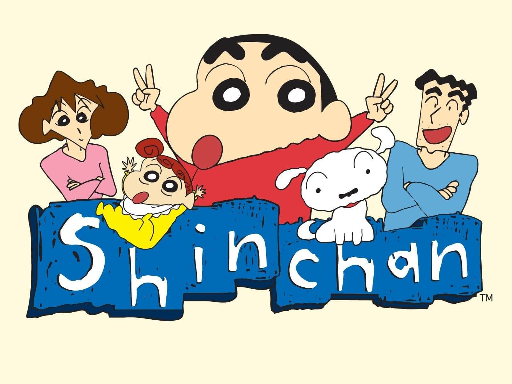

Different cartoons

Some of the cartoons are listed below
1.Peppa Pig
Peppa Pig is a British preschool animated television series directed and produced by Astley Baker Davies in association with Entertainment One. The show revolves around Peppa, an anthropomorphic female pig, and her family and peers. The show originally aired on 31 May 2004. There have been six seasons as of 2019. The sixth season began airing on 5 February 2019 in the UK. Peppa Pig has been broadcast in over 180 countries. The main characters are Peppa Pig,George Pig,Mummy Pig and Daddy Pig
2.Tom and Jerry
Tom and Jerry is an American animated franchise and series of comedy short films created in 1940 by William Hanna and Joseph Barbera. Best known for its 161 theatrical short films by Metro-Goldwyn-Mayer, the series centers on the rivalry between the titular characters of a cat named Tom and a mouse named Jerry. Many shorts also feature several recurring characters. In its original run, Hanna and Barbera produced 114 Tom and Jerry shorts for MGM from 1940 to 1958.


3.Masha and The Bear
Masha and The Bear is a Russian animated television series created by Oleg Kuzovkov and produced by Animaccord Animation Studio loosely based on the oral children's folk story of the same name. The show focuses on the adventures of a little girl named Masha and her caring friend, the bear that always keeps her safe from disasters. The first episode was released in 2009.[1] The series has been translated into 42 languages and was broadcast almost in every part of the world by giant medias.
4.Mickey Mouse
Mickey Mouse is a series of American animated comedy short films produced by Walt Disney Productions. The series started in 1928 with Steamboat Willie and ended in 1953 with The Simple Things. Four additional shorts were released between 1983 and 2013. The series is notable for its innovation with sound synchronization and character animation, and also introduced well-known characters such as Mickey Mouse, Minnie Mouse, Pluto and Goofy.


5.Spongebob Square Pants
SpongeBob SquarePants is an American animated comedy television series created by marine science educator and animator Stephen Hillenburg for Nickelodeon. The series chronicles the adventures and endeavors of the title character and his aquatic friends in the fictional underwater city of Bikini Bottom. The fifth-longest-running American animated series, its popularity has made it a media franchise. It is the highest rated series to air on Nickelodeon.A yellow sea sponge named SpongeBob SquarePants, who enjoys being a cook at Krusty Krab, lives in the Pacific Ocean. He embarks on various adventures with his friends at Bikini Bottom.
6.Scooby Doo
Brainiac Velma, jock Fred, fashionista Daphne, hippie Shaggy, and Shaggy's highstrung, talking Great Dane, Scooby-Doo, climb into their green van, the Mystery Machine, and hit the road in search of weird phenomena to solve. And even when Scooby and the gang aren't actively searching for them, mysteries just have a way of falling into their laps. Ruh-roh!


7.Shimmer and Shine
Shimmer and Shine, fraternal twin genies, befriend Leah, a human. They decide to fulfil her three wishes daily but spoil the execution of her wishes due to their inexperience. Shimmer and Shine is an American animated television series, created by Farnaz Esnaashari-Charmatz. It airs on Nick Jr. in the United States and on Treehouse TV in Canada. The series is based on an unreleased pilot from 2013, and premiered on Nickelodeon on August 24, 2015.
8.Pink Panther
The Pink Panther is a British-American media franchise primarily focusing on a series of comedy-mystery films featuring an inept French police detective, Inspector Jacques Clouseau. The franchise began with the release of the classic Pink Panther film in 1963. The role of Clouseau was originated by, and is most closely associated with, Peter Sellers. Most of the films were written and directed by Blake Edwards, with theme music composed by Henry Mancini. Elements and characters inspired by the films were adapted into other media, including books, comic books and animated series.

9.Chotta Bheem
The series is set in the fictional Kingdom of Dholakpur, somewhere in rural India . The series revolves around Bheem, sometimes referred to as Chhota Bheem (little Bheem) due to his young age, a boy who is strong and intelligent. Bheem's rival is Kalia, who is envious of Bheem's popularity. Kalia, along with his sidekicks, twin brothers Dholu and Bholu, always plot to embarrass and defeat Bheem, but never succeed. The main cast of the show are Bheem, Chutki, Raju, Jaggu, Kalia, Dholu and Bholu.
10.Shin Chan
Crayon Shin-chan (Japanese: クレヨンしんちゃん, Hepburn: Kureyon Shin-chan), also known as Shin Chan, is a Japanese manga series written and illustrated by Yoshito Usui. This follows the adventures of the five-year-old Shinnosuke "Shin-chan" Nohara and his parents, baby sister, dog, neighbours, and best friends and is set in Kasukabe, Saitama Prefecture of Japan.

Wanna know which all are the most popular cartoons? click here
Click here to go back to the first page